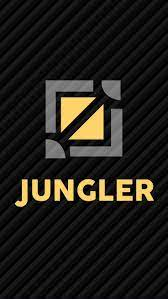
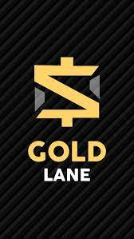
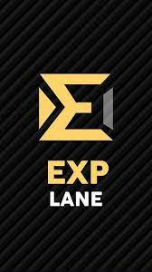
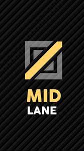
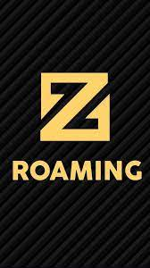

Sebenarnya, nggak ada yang baku mengenai jalur Jungle lane. Pasalnya jalur rotasinya bisa terus berubah-ubah, sesuai dengan situasi dan kebiasaan pemain. Sehingga, posisinya tidak fix seperti tiga lane sebelumnya.
Meskipun nggak ada jalur fix, di lane ini, pemain diharuskan untuk mendapatkan monster-monster hutan yang tersebar di gold, exp, dan buff, sembari melakukan ganking salah satu lane.
Selain itu, pemain yang punya sebutan jungler jika bermain di posisi ini, harus menggunakan battle spell Retribution.
Ada banyak tipe Hero yang bisa dimainkan di lane Mobile Legend ini. Mulai dari Marksman, Fighter, Assassin, hingga Mage. Bahkan, Hero Tank pun bisa dimainkan juga di posisi ini.
GoldLane

Untuk menemukan Gold lane dalam map Mobile Legends, posisinya pasti berada secara bersebarangan dengan EXP lane. Jadi, jika EXP lane berada di atas, maka Gold ada di bawah. Begitu pun sebaliknya.
Hero yang menempati posisi di lane ini, bisa mendapatkan tambahan 50 persen gold dari Siege Minion musuh dalam tujuh wave pertama. Jadi, bisa dikatakan bahwa Hero di lane ini bakal lebih kaya, namun secara level lebih lambat peningkatannya.
Gold lane sangat cocok untuk diisi Hero Marksman, Assassin, bahkan Mage. Pasalnya, Hero Mobile Legends tersebut bergantung kepada gold untuk dapatkan item Mobile Legends yang dibutuhkan agar bisa team fight dan bisa miliki damage besar.
ExpLane

Posisi EXP Lane itu berada di jalur yang lebih dekat dengan Turtle Lane, atau tempat di mana pertama kali Turtle hadir di dalam permainannya.
Selain itu, kamu juga bisa memastikannya dengan menunggu wave Minion pertama, dan melihat Siege Minion yang membawa gulungan kertas di bagian belakangnya bergerak ke arah mana. Itulah yang dinamakan EXP lane.
Kamu bukan serta merta hanya bermain saja di lane ini nih. Pasalnya, Hero yang ditempatkan di lane ini, punya tujuan untuk bisa naik level lebih cepat.
Karena, setiap Siege Minion musuh yang bawa gulungan kertas di belakangnya dalam tujuh wave pertama, bisa menghadirkan tambahan 50 persen EXP.
Ada banyak tipe Hero yang ada di Mobile Legends. Namun, EXP lane biasanya diisi dengan Hero Fighter atau Tank yang lebih membutuhkan level ketimbang gold di fase awal permainan. Apalagi, kedua tipe Hero tersebut biasanya punya HP lebih tebal, sehingga rentan diserang musuh.
MidLane

Lane yang satu ini sangat krusial dalam permainan Mobile Legend. Pasalnya, jarak tempuh Minion lebih singkat di Mid lane. Sehingga, bisa jadi bumerang jika dilepas begitu saja.
Jika Mid lane bisa dikendalikan, maka memudahkan kamu, khususnya para Jungler untuk mendapatkan monster hutan yang dibutuhkan. Terutamanya adalah Orange dan Purple Buff yang sangat dekat dengan jalur ini.
Biasanya, Hero Mage atau Physical dimainkan untuk lane ini. Karena keduanya punya kemampuan clear Minion wave yang cepat.
Roamer

Sama seperti Jungle, Roamer lane juga nggak punya jalur fix. Pasalnya, ia akan terus mengelilingi lane yang ada di Mobile Legends, untuk menjaga jungler melakukan farming atau ganking.
Nah, tugas seorang pemain yang mengambil posisi ini adalah untuk melakukan clear Minion atau farming. Kamu juga wajib memakai item Roam untuk mendapatkan exp dan gold, agar bisa fokus menjelajahi map Land of Dawn.
Biasanya, Hero bertipe Tank dan Support ditugaskan untuk mengambil posisi ini. Pasalnya, mereka punya HP tebal yang bisa melahap semua damage milik musuh, sambil mengacaukan formasi lawan agar bisa menang team fight.
5 Lane di MOBILE LEGENDS:Bang-Bang
Di sini, bakal diberikan penjelasan paling lengkap mengenai lane yang ada di Mobile Legend. Mulai dari EXP hingga Gold lane yang ada di Land of Dawn.
Di dalam game milik Moonton ini, memang memiliki map dan lane sebagai tempat untuk kamu berjalan dan bertarung. Namun sayangnya, masih banyak yang belum paham dengan map dan lane yang ada di game MLBB ini.
Meskipun begitu, kamu nggak usah khawatir. Pasalnya, di sini akan dijelaskan dengan lengkap, mengenai map dan lane yang ada di Mobile Legends.
Secara sederhana, ada tiga lane berbeda yang ada di map bernama Land of Dawn ini. Mulai dari Top lane (atas), Mid lane (tengah), dan Bottom lane (bawah).
Namun, dengan seiringnya waktu, kini lane tersebut pun dikenal dengan nama atau sebutan lain. Perubahan sebutannya menjadi Mid lane, EXP lane, Gold lane, hingga Roamer lane, dan Jungle Lane.
Adapun penjelasan lengkapnya bisa kamu lihat di bawah ini.